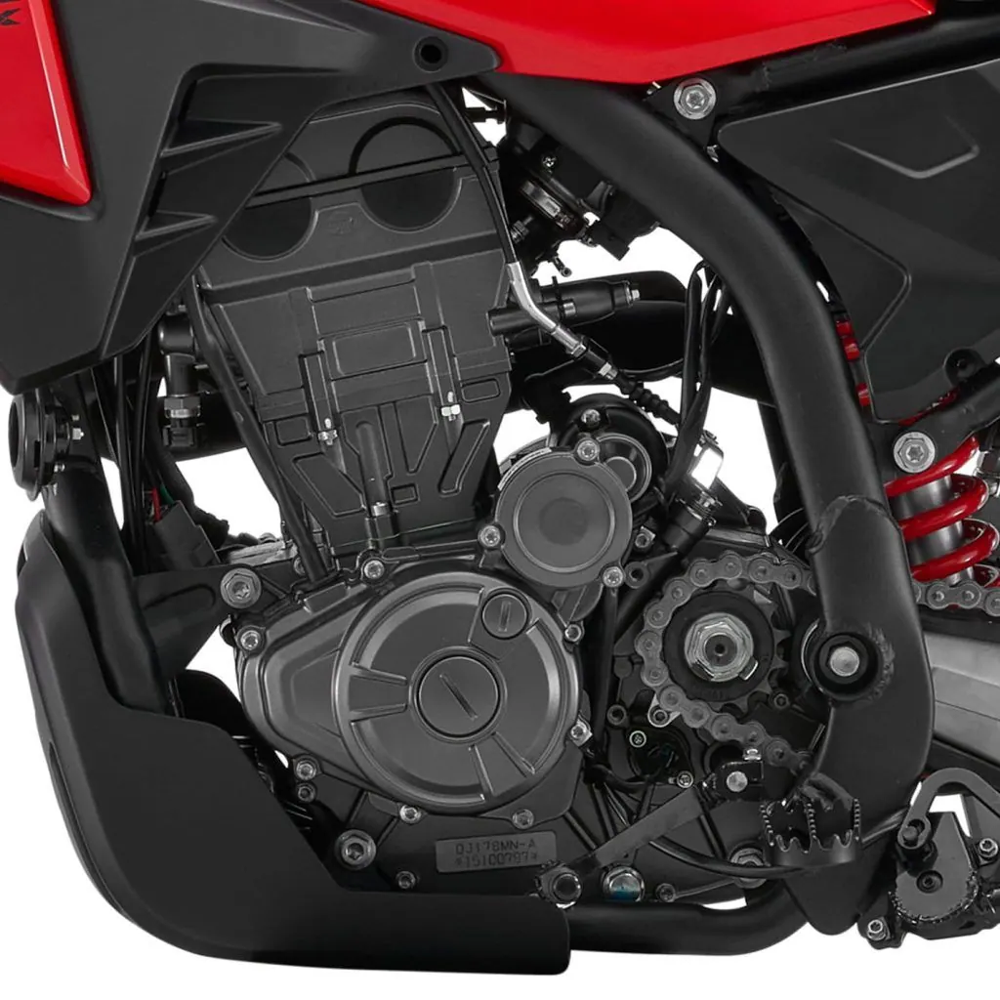
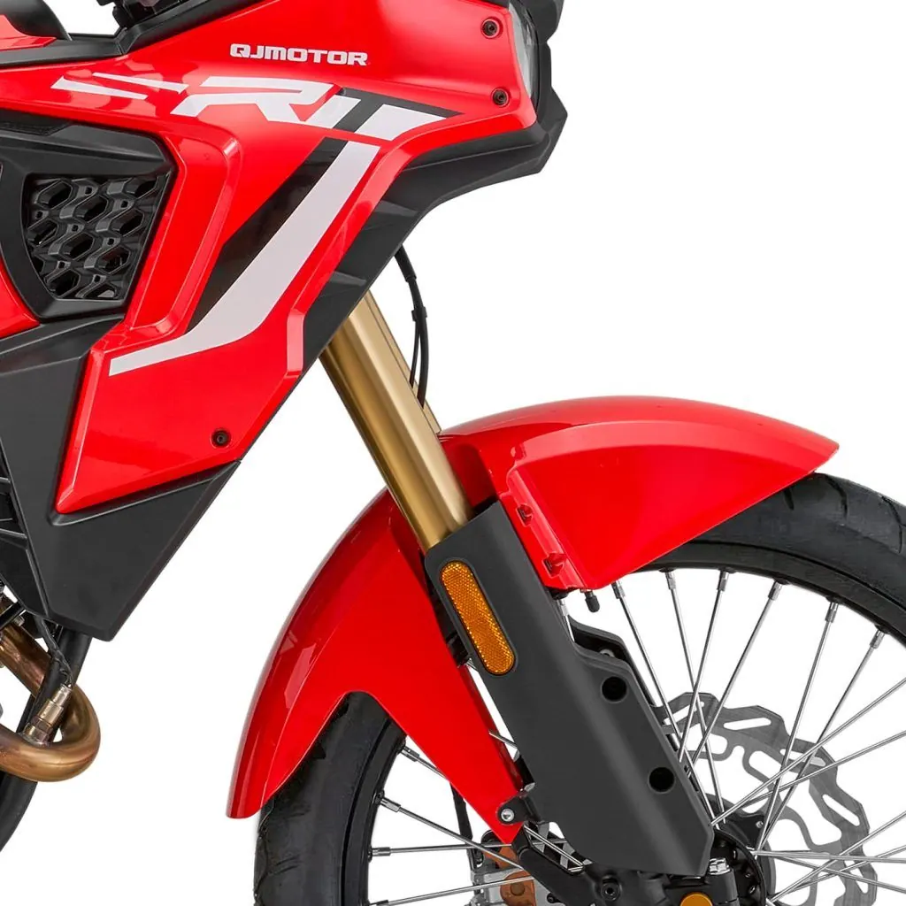

Macbor
Montana XR1 125 EVO
B·A1 125 cc · Adventure
Propuesta de OpsPilot para Expomoto Córdoba, en revisión. No es la web oficial: expomotocordoba.es




El motor de la SRT 125DX es un monocilíndrico de 4 válvulas con inyección EFI que desarrolla 15 CV a 9.500 rpm y un par máximo de 12,5 Nm a 7.500 rpm.
Su refrigeración líquida asegura un funcionamiento estable incluso en recorridos prolongados, mientras que el embrague multidisco en baño de aceite y el arranque electrónico proporcionan una respuesta suave, precisa y fácil de gestionar en cualquier entorno.
Gracias a la caja de seis velocidades y a su entrega lineal, este propulsor ofrece una conducción equilibrada, ideal para alternar ciudad, carretera y pistas con total confianza.
Horquilla delantera invertida de largo recorrido (185 mm) que garantiza una excelente absorción de baches, mayor rigidez y precisión en la conducción.
Su diseño robusto aporta estabilidad tanto en pistas como en asfalto, permitiendo un pilotaje más seguro y deportivo.
Equipado con un monoamortiguador trasero diseñado para ofrecer control y confort en todo tipo de superficies.
Permite una conducción más equilibrada, absorbiendo irregularidades del terreno y manteniendo la moto estable tanto en pistas rápidas como en rutas urbanas.
Disco delantero de Ø300 mm con sistema ABS , diseñado para ofrecer una frenada potente, estable y progresiva en cualquier situación.
Su diámetro amplio mejora la disipación térmica y reduce la fatiga en uso prolongado, proporcionando seguridad tanto en asfalto como en terrenos más irregulares.